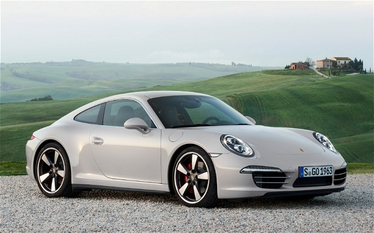

Ресторан "У конца Вселенной"
Есть теория, согласно которой в том случае
если кто-то точно выяснит, для чего и зачем появилась
Вселенная, она тут же исчезнет, и ее заменит нечто другое,
более бессмысленное и необъяснимое.
Есть другая теория, согласно которой это уже произошло.
- Э-э, капитан…
- Да, Номер Первый?
- Номер Второй прислал рапорточек…
- О Господи…
Капитан чуть раздраженно посмотрел на бесконечные звездные просторы. Он удобно сидел под огромным прозрачным куполом, и вокруг него и над его головой сияли звезды, которые к концу путешествия значительно поредели. Повернувшись назад и взглянув поверх своего огромного, длиной не меньше двух миль, корабля, капитан увидел бы гораздо больше звезд, почти сплошную полосу света. Это был вид на центр Галактики, от которого они удалялись уже не первый год со скоростью, которую сейчас он не помнил точно, но знал, что она очень велика. Она приближалась к скорости то ли того, то ли этого, а может, была в три раза больше, чем скорость еще чего-нибудь? Но все равно внушительно. Он уставился в яркое далекое свечение позади корабля, словно пытался увидеть там что-то особенное. Он смотрел туда каждые несколько минут, но так и не мог найти то, что искал. Однако он не позволял себе предаваться унынию. Ученые особенно подчеркивали, что все будет просто прекрасно, при условии, что никто не будет паниковать, а будет просто делать то, что должен, так, как должен. Капитан не паниковал. С его точки зрения, все шло просто замечательно. Он потер плечо большой мыльной мочалкой. И снова ему показалось, что что-то вызвало у него легкое раздражение. С чего бы это? Легкое покашливание напомнило ему, что первый офицер корабля все еще стоит рядом.
Отличный парень, этот Номер Первый. Недалек, конечно, и у него вечные проблемы с завязыванием шнурков, но все равно из него получился вполне приличный офицер. Не буду же я изничтожать человека только за то, что он долго завязывает шнурки - сколько бы времени у него это ни отнимало. Не то, что этот противный Номер Второй, все время марширует взад-вперед, чистит пуговицы, и каждый час докладывает: «Корабль все еще движется, капитан». «С курса все еще не сбились, капитан». «Кислород все еще в норме, капитан». Спокойно обойдемся, подумал капитан. Ах да, вот в чем причина его раздражения. Он посмотрел на Номера Первого.
- Да, капитан, он вопил что-то насчет каких-то задержанных… Капитан удивленно поднял брови. Что-то не верится, подумал он, но зачем же мешать своим офицерам? Любопытный факт, действительная важность которого до сих пор точно не установлено - около 85 % всех известных миров в Галактике, как примитивных, так и высокоразвитых, изобрели напиток, который называется «джинст онекам», или «джий`н`сст`онником», или «ДЖ-инзт^онегкм», или любой другой из тысячи, а может, и больше, вариаций на одну и ту же фонетическую тему. Сами напитки не имеют между собой ничего общего. Например, сивольвианский «дчинсто/ньикум» - обычная вода, подаваемая подогретой чуть выше комнатной температуры, а гаргакаканский «цзйинс-т'т-оонькам» одним своим запахом валит с ног коров в радиусе сотни метров; единственным, что их объединяет, является факт, что их названия в той или иной степени звучат одинаково, и то, что они были изобретены и названы до того, как миры, где они появились, вступили в контакт с инопланетными цивилизациями. О чем это говорит? Неизвестно. Этот факт существует сам по себе. Теоретическая структуральная лингвистика рассматривает его, как досадное исключение, но он все равно существует. Старые структуральные лингвисты выходят из себя от ярости, когда молодые структуральные лингвисты упоминают о нем. Молодые структуральные лингвисты впадают в восторженное неистовство, ночи напролет споря об этом, убежденные, что они вот-вот сделают исключительно важное открытие. В конце концов они преждевременно становятся старыми структуральными лингвистами, и выходят из себя от ярости, слушая молодых… и т. д. Структуральная лингвистика и по сей день остается ареной ожесточенной борьбы различных школ, и большинство тех, кто ей занимается всерьез, слишком много времени проводят, пытаясь утопить свои проблемы в уискисс-одвой.
Номер Второй стоял перед капитанской ванной. Его трясло от ярости.
- Вы не будете допрашивать задержанных, сэр? - взвизгнул он.
Капитан взглянул на него с выражением добродушного удивления.
- Ради всех голгафринчамских богов, объясните мне, зачем это нужно?
- Чтобы получить сведения, сэр! Чтобы выяснить, зачем они пробрались сюда!
- Да ладно вам, - сказал капитан. - Они просто зашли, чтобы выпить стаканчик, правда ведь?
- Но сэр, я их задержал! Я должен их допросить!
Капитан, с сомнением выпятив нижнюю губу, посмотрел на задержанных.
- Ну что ж, если вы должны… Спросите, что они будут пить.
Глаза Номера Второго вспыхнули холодным огнем. Он медленно приблизился к Форду Префекту и Артуру Денту.
- Ну ты, подонок, - рявкнул он, - ты, ублюдок… - он ткнул Форду под ребра смерть-вужасом.
- Полегче, Номер Второй, - мягко заметил капитан.
- Что будешь пить!!! - завопил Номер Второй.
- Джинст оникам. Мне нравится название, - быстро ответил Форд. - А ты, Артур?
Артур захлопал глазами.
- Что? А, да, конечно, - сказал он.
- Со льдом или без!!! - заорал Номер Второй.
- Со льдом, пожалуйста, - сказал Форд.
- А лимон??!!
- Да, пожалуй, - сказал Форд, - а еще, у вас есть такие маленькие печеньица? Ну, знаете, с сыром…
- Вопросы здесь задаю я!!!!! - гаркнул Номер Второй, сотрясаясь от с трудом сдерживаемой злости.
- Номер Второй… - негромко сказал капитан.
- Сэр?
- Потише, пожалуйста, ладно. Я пытаюсь отдохнуть и принять ванну.
Глаза Номера Второго сузились, и стали тем, что в каталогах «Подумайте, Как Вы Выглядите» обозначается термином «Прищуренные Глаза - Холодный Взгляд». Такая гримаса, очевидно, должна означать, что вы пытаетесь произвести на оппонента впечатление, что вы забыли очки или с трудом боретесь со сном. Почему это также может производить пугающее впечатление, остается неразрешенной проблемой.
Он двинулся на капитана, и сжал губы в тонкую жесткую линию. Опять-таки непонятно, почему это считается угрожающим. Если, к примеру, вы блуждаете по траальским джунглям, и вдруг нос к носу сталкиваетесь с печально известным прожорным заглотозавером, вы очень обрадуетесь, увидев на его морде тонкую жесткую линию, а не огромную яму с тысячью хватательных щупалец, как то бывает обычно.
- Могу ли я напомнить, сэр, - прошипел Номер Второй, - что вы сидите в этой ванне уже три года?! - И, выпустив свой последний заряд, Номер Второй повернулся на каблуках, и строевым шагом отошел в угол, где встал боком к зеркалу, и время от времени бросал на свое отражение довольный взгляд.
Капитан неловко заерзал. Он смущенно улыбнулся Форду Префекту.
- Моя работа настолько утомительна, что приходится часто отдыхать, правда ведь?
Форд медленно опустил руки. Это не вызвало никакой реакции. Артур тоже опустил руки.
Ступая очень медленно и осторожно, Форд подошел к пьедесталу. Он похлопал по хрусталю.
- Красиво, - солгал он.
- Я имею в виду, на какую-нибудь планету, что менее обречена. Вы туда собирались переехать?
- Да. И переезжаем. И тогда решили построить три корабля, понимаете, три космических ковчега, и… Вам не скучно?
- Нет-нет, - твердо заявил Форд. - Совсем наоборот.
- Как приятно, - промурлыкал капитан, - поговорить с новыми людьми.
Глаза Номера Второго снова оглядели всю комнату, и опять вернулись к зеркалу, словно две мухи на свой любимый кусок месяц назад протухшего мяса.
- Проблема с этим долгим путешествием в том, - продолжал капитан, что в конце концов начинаешь постоянно болтать сам с собой, а это очень надоедает, потому что в половине случаев точно знаешь, что ты собираешься сказать.
- Только в половине? - удивился Артур.
Форд тоже вгляделся в Центр Галактики, и вдруг нахмурился.
- Если, конечно, - сказал он, - их не съел козел-мутант.
- Ну да… - В голосе капитана вдруг появилось сомнение. - Козел-мутант…
Он посмотрел на гигантский пульт. Индикаторы невинно подмигнули ему. Он посмотрел на звезды, но те молчали. Он посмотрел на первого и второго офицеров, но те, казалось, в этот момент были заняты своими мыслями. Он посмотрел на Форда Префекта, который посмотрел на него и поднял брови.
- Забавно, знаете ли, - наконец сказал он, - но теперь, когда я рассказал эту историю тем, кто ее еще не слышал… Она вам не кажется странной, Номер Первый?
- Ээээээээээээ… - сказал Номер Первый.
- Ну ладно, - вдруг заторопился Форд. - Я вижу, вам теперь есть о чем поговорить, так что спасибо за выпивку, и если вы сможете нас высадить на первой подходящей планете…
- Видите ли, - сказал капитан, - это несколько затруднительно. Траекторию нам задали еще на Голгафринчаме. Я думаю, они сделали так отчасти потому, что я не в ладах с арифметикой…
- Вы хотите сказать, что мы застряли на этом корабле? - завопил Форд, внезапно потеряв терпение. - Когда же вы долетите до планеты, которую собираетесь колонизировать?
- Я думаю, мы почти прилетели, - ответил капитан, - с минуты на минуту прибудем. Наверно, мне пора выбираться из ванны. Жаль - мне так нравится сидеть в ванне.
- Значит, мы с минуты на минуту сядем? - спросил Артур.
- Ну, не совсем сядем, не то чтобы сядем… э-э…
- В чем дело? - резко спросил Форд.
- Дело в том, - сказал капитан, тщательно подбирая слова, - что, насколько я помню, в плане было предусмотрено, что мы там разобьемся.
- Разобьемся? - вскричали Форд и Артур.
- М… да, - произнес капитан. - По какой-то очень важной причине, но я точно не помню, по какой. Что-то вроде…
Форд взорвался.
- Да вы все просто безмозглые бесполезные бездельники! - завопил он.
- А, вспомнил! - радостно улыбнулся капитан. - Именно поэтому.
Вот что говорит Галактический Путеводитель для Путешествующих Автостопом о планете Голгафринчам: это мир с богатой и полной легенд историей, обагренной и местами озелененной кровью тех, кто в разное время пытался завоевать ее. Это мир выжженной и голой земли, над которой несется знойный благоуханный ветер, подхватив ароматы благовонных ручьев, журчащих по раскаленным скалам, и утоляет жажду темных душистых лишайников, прячущихся под ними; это мир пылкого воображения, иногда даже больного воображения, особенно после употребления в пищу темных душистых лишайников; это мир неспешных рассуждений в тени тех деревьев, которые удается найти тем, кто не пробовал темных душистых лишайников; это мир железа, крови и героических деяний; мир тела и духа. Такой была его история. 
Во всей его таинственной и темной истории самыми таинственными персонажами были, без сомнения, Великие Поэты Круга из Ариума. Поэты Круга обычно жили в хижинах на высокогорных перевалах, где устраивали засады на караваны зазевавшихся путников, брали их в круг, и забрасывали камнями.
А когда путники начинали молить их о пощаде, и просили отвязаться от них, и не надоедать людям этим дурацким времяпрепровождением, а вместо этого пойти и написать еще пару поэм, Поэты Круга внезапно останавливались, и принимались читать одну из семисот девяноста четырех Великих Песенных Книг Вассилиана. Это были песни необычайной красоты, и еще более необычайной длины, и все были написаны абсолютно на один и тот же сюжет.
Первая часть каждой песни рассказывала, как выехали однажды из славного города Вассилиана пять доблестных принцев на четырех конях. Принцы, которые, разумеется, отличались мужеством, рыцарством и мудростью, отправились в отдаленнейшие страны, и там сражались с ужасными великанами, беседовали с мудрейшими из мудрых, пили чай со всякими богами и спасали прекрасных чудовищ от кровожадных принцесс, а потом заявляли, что достигли просветления, и, таким образом, их странствия закончены.
Вторая часть каждой песни, которая была намного длиннее, чем первая, рассказывала о том, как они препирались, кто из них пойдет обратно пешком.
Но все это было в далеком-далеком прошлом. Правда, именно один из потомков Поэтов Круга придумал все эти жуткие истории о том, что Голгафринчам обречен, которые позволили голгафринчамцам избавиться от абсолютно бесполезной трети его населения. Остальные две трети и не думали улетать, а спокойно жили и вели богатую и счастливую жизнь до тех пор, пока не вымерли в результате вирусного заболевания, передающегося через грязные телефонные трубки.